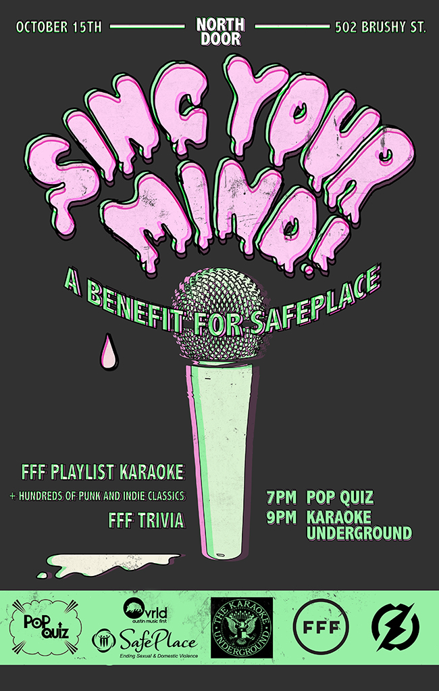

Very excited for this Fun Fun Fun Fest-themed show at the North Door on Wednesday night! Pop Quiz will host a FFF trivia contest from 7-9 and then we’ll have Karaoke Underground from 9-midnight, featuring 86 songs from artists appearing at the fest this year. We’ll have grand prizes of FFF passes for the trivia winners and as a raffle prize during karaoke, plus food and drink prizes as well. $5 cover and raffle ticket proceeds will benefit SafePlace so come SING YOUR MIND for tons of fun and a great cause!
Pop Quiz @ 7p – Fun Fun Fun Fest Trivia
Karaoke Underground @ 9p – punk/indie karaoke w/ FFF artists
FFF passes for trivia and raffle winners, plus more prizes!
Get raffle tickets by singing songs from FFF artists and/or making a donation to SafePlace.
FB event
Here are the 86 songs from FFF 2014 artists, give your favorites a few spins before the show!
Artist – Title
16 Horsepower – Praying Arm Lane
7 Seconds – 99 Red Balloons (by Nina Hagen)
7 Seconds – Young Til I Die
Barnett, Courtney – History Eraser
Black Lips – Bad Kids
Blood Brothers – Love Rhymes With Hideous Car Wreck
Braid – Ariel
Dead Kennedys – California Uber Alles
Dead Kennedys – Holiday In Cambodia
Dead Kennedys – I Fought The Law (by Bobby Fuller)
Dead Kennedys – Nazi Punks Fuck Off
Dead Kennedys – Too Drunk To Fuck
Dead Kennedys – Well Paid Scientist
Death From Above 1979 – Black History Month
Death From Above 1979 – Romantic Rights
Dictators – California Sun (by The Rivieras)
Dictators – Stay With Me
Dinosaur Jr – Freak Scene
Dinosaur Jr – Just Like Heaven (by The Cure)
Dinosaur Jr – Over It
Dum Dum Girls – Coming Down
Dum Dum Girls – It Only Takes One Night
Failure – Stuck On You
Foxygen – San Francisco
Golden Boys – Older Than You
Gorilla Biscuits – New Direction
Har Mar Superstar – Lady, You Shot Me
Hot Water Music – Not For Anyone
Hot Water Music – Trusty Chords
Iceage – Ecstasy
Knapsack – Decorate The Spine
Meat Puppets – Lake Of Fire
Meat Puppets – Plateau
Meat Puppets – Split Myself In Two
Metz – Headache
Mineral – Gloria
Mineral – Parking Lot
Modest Mouse – 3rd Planet
Modest Mouse – All Nite Diner
Modest Mouse – Baby Blue Sedan
Modest Mouse – Bankrupt On Selling
Modest Mouse – Dark Center Of The Universe
Modest Mouse – Doin’ The Cockroach
Modest Mouse – Dramamine
Modest Mouse – Never Ending Math Equation
Modest Mouse – Polar Opposites
Modest Mouse – Teeth Like God’s Shoeshine
Murder City Devils – 18 Wheels
Murder City Devils – Boom Swagger Boom
Murder City Devils – Press Gang
Murder City Devils – Rum To Whiskey
Murder City Devils – Somebody Else’s Baby
Negative Approach – Can’t Tell No One
Neutral Milk Hotel – Communist Daughter
Neutral Milk Hotel – Ghost
Neutral Milk Hotel – In The Aeroplane Over The Sea
Neutral Milk Hotel – Song Against Sex
New Pornographers – Brill Bruisers
New Pornographers – Challengers
New Pornographers – Letter From An Occupant
New Pornographers – Mass Romantic
New Pornographers – The Slow Descent Into Alcoholism
New Pornographers – These Are The Fables
New Pornographers – War On The East Coast
Numan, Gary (Tubeway Army) – Bombers
Numan, Gary (Tubeway Army) – That’s Too Bad
Numan, Gary (Tubeway Army) – Me! I Disconnect From You
Olsen, Angel – Forgiven/Forgotten
Pains Of Being Pure At Heart – Young Adult Friction
Peelander-Z – So Many Mike
Pissed Jeans – Bathroom Laughter
Rocket From The Crypt – I’m Not Invisible
Rocket From The Crypt – Savoir Faire
Rocket From The Crypt – Straight American Slave
Sick Of It All – Friends Like You
Sun Kil Moon – Carry Me Ohio
Sun Kil Moon – Salvador Sanchez
World Is A Beautiful Place & I Am No Longer Afraid To Die – Fightboat
Yo La Tengo – Autumn Sweater
Yo La Tengo – Big Day Coming (loud)
Yo La Tengo – Cherry Chapstick
Yo La Tengo – Dreaming (by Blondie)
Yo La Tengo – Little Honda (by The Beach Boys)
Yo La Tengo – Our Way To Fall
Yo La Tengo – Tom Courtenay
Yo La Tengo – You Can Have It All